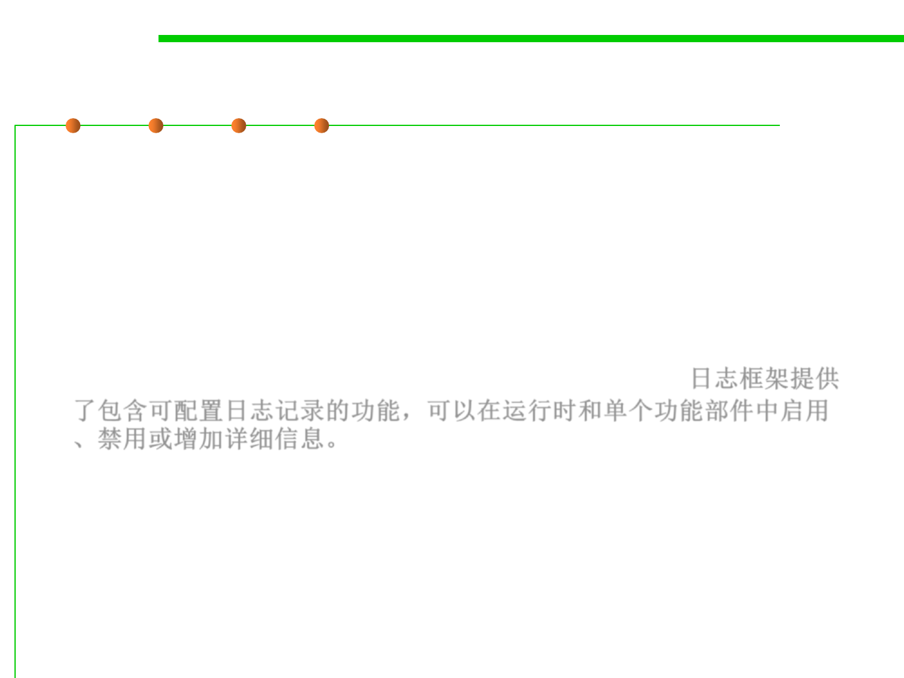

Logging
7.4 Debugging
▪ At its simplest level, System.out.println() or similar
throughout the code is enough.
▪ If your logging requirements are at all complex, however, you
should consider using one of the many logging frameworks.
▪ Logging frameworks provide the ability for your code to contain
configurable logging that can be enabled, disabled, or increased in
detail, typically at runtime and by individual feature. 日志框架提供
了包含可配置日志记录的功能，可以在运行时和单个功能部件中启用
、禁用或增加详细信息。